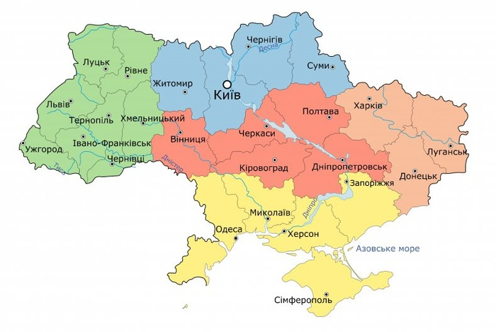
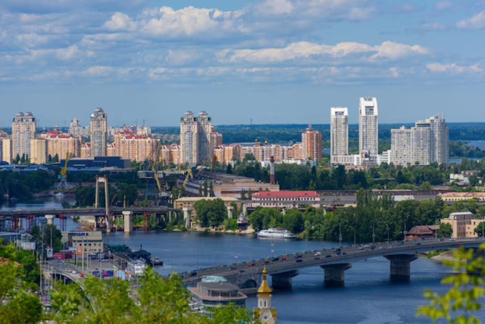
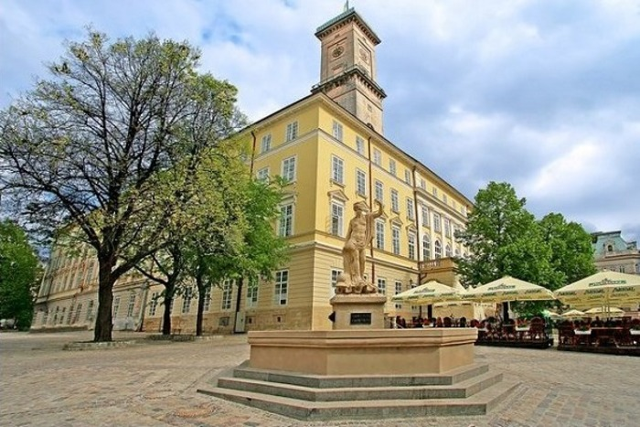
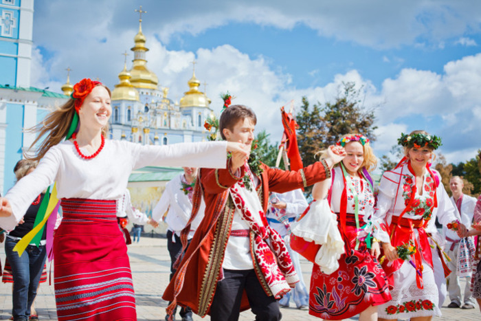

Вступ
Україна — найбільша країна Європи, розташована в самому серці континенту.
Вона відома своєю багатою історією, мальовничими краєвидами та щирими людьми.
Столиця — місто Київ, яке є політичним, економічним і культурним центром.
Великі міста
Деякі з найбільших міст України за населенням:
- Київ
- Львів
- Одеса
- Харків
- Дніпро
Київ
Київ — одне з найстаріших міст Європи. Тут знаходяться Золоті ворота , Софійський собор і Києво-Печерська лавра .
Місто розташоване на берегах Дніпра і поєднує стародавні пам’ятки з сучасною архітектурою.
Львів
Львів — культурна столиця України, відома своїми вузькими вуличками та архітектурними ансамблями.
Місто славиться кав’ярнями, фестивалями та атмосферою середньовічної Європи.
Культура
Українська культура — це поєднання традицій і сучасності. Вона включає:
- Народні пісні та музика
- Традиційні танці
- Вишиванки та ремесла
- Кухня (борщ, вареники, сало)
Культура України завжди була частиною європейської та водночас зберігала свою самобутність.
Факти
Цікаві факти про Україну:
- Україна має найродючіший чорнозем у світі.
- Має вихід до Чорного та Азовського морів.
- На території країни понад 30 тисяч річок.
- Україна — один із найбільших експортерів зерна у світі.
- Найвища гора — Говерла (2061 м).